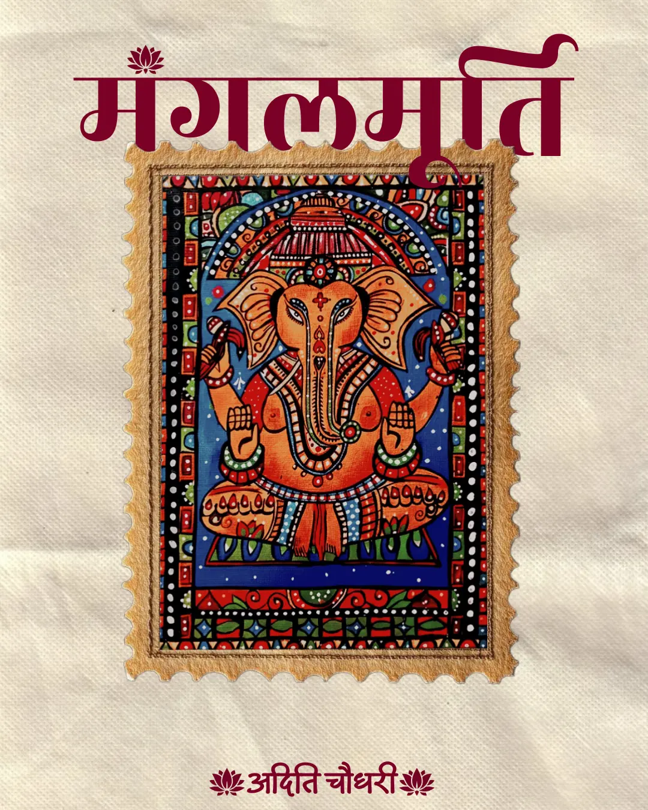

I never stopped loving art. I just learned how to hide it inside code, designs, and deadlines. Like many engineering students, I chose a path that promised stability, structure, and opportunity. Somewhere along the way, though, I quietly packed away my paintbrushes, sketchbooks, and unfinished canvases. Not because I stopped caring, but because life told me it was time to be “practical.” Still, art never really left me. It simply changed its form.
Growing up, art was never just a hobby for me. It was how I expressed myself, how I processed emotions, how I understood the world. Colors, textures & compositions, they spoke to me in ways words often couldn’t. But when I stepped into engineering, things changed. Suddenly, my world revolved around logic, syntax, algorithms, and systems. Creativity seemed like something optional. Something extra. Something I could come back to “later.” So I adapted. And in adapting, I found a new way to create.
Today, when I work on UI/UX designs, I don’t see them as just layouts and wireframes. I see them as digital canvases. Every color palette feels like choosing paints. Every font feels like selecting a brush. Every spacing decision feels like composing a painting. I find myself spending hours exploring art websites, portfolios, and creative platforms not just for design inspiration, but for emotional connection. I’m drawn to interfaces that feel alive, expressive, and human. Because deep down, I’m still that artist. Just working in pixels instead of pigments.
One of my favorite things to do is include my own artwork inside my graphic designs. A sketch becomes a background. A painting becomes a visual story. A personal piece becomes part of a professional project. It’s my way of saying: This is still me. Even when I’m designing for brands, clients, or assignments, I try to leave a part of myself in every project. A subtle texture. A thoughtful composition. A handcrafted element. Something that reminds me why I started creating in the first place.

Technology moves fast. New tools. New frameworks. New trends. New expectations. As an engineering student, I constantly feel the pressure to keep up, to learn more, code better, adapt faster. And I do. But I refuse to let that process erase my creativity. Instead, I let art guide how I learn. When I study front-end development, I think about aesthetics. When I build websites, I think about user emotions. When I code interfaces, I think about storytelling. To me, technology is not the opposite of art. It’s another medium.
I made a quiet promise, one that I try to keep every day.
No matter how busy I get.
No matter how technical my work becomes.
No matter how much I grow.
I will not abandon my inner artist.
I will keep sketching.
I will keep painting.
I will keep designing with heart.
I will keep creating with intention.
Because art is not something I used to do.
It is something I am.
And through engineering, design, and technology,
I will continue to let it live.